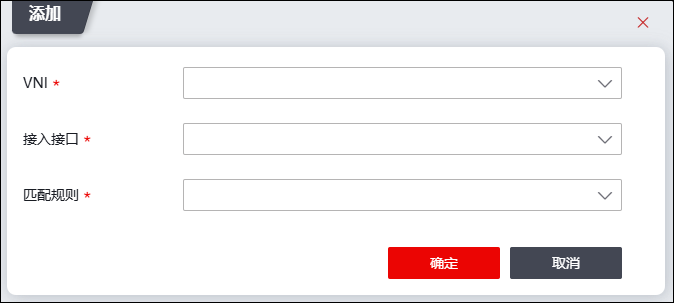

VXLAN业务接入端VSAP（VXLAN service access port）是VXLAN业务接入的抽象接口，它用于接入端的报文识别，为了分辨出一个报文所属的VXLAN而设计的。
NGFW的VXLAN业务接入支持基于报文流封装接入方式，通过在VSAP上配置不同的流封装类型以实现不同的接口接入不同的数据报文，将VSAP关联广播域（VXLAN网桥）后，可实现数据报文通过VXLAN转发。
配置业务接入端的操作步骤如下：
| 步骤1 | 选择 。 |
| 步骤2 | 点击“添加”，如下图所示。 |

各项参数的具体说明如下表所示。
参数 |
说明 |
|---|---|
VNI |
在下拉框中选择VXLAN接口，有关VXLAN接口的配置详见 VXLAN接口。 |
接入接口 |
在下拉框中选择业务接入接口。 说明：接入接口需工作在交换模式。 |
匹配规则 |
在下拉框中选择业务接入匹配规则，可选项：all、untag、dot1q、qinq。 Øall：允许接口接收所有报文进入指定VXLAN，不区分报文中是否带VLAN Tag。不论是对原始报文进行VXLAN封装，还是解封装VXLAN报文，该类型接口都不会对原始报文进行任何VLAN Tag处理，包括添加、替换或剥离。 Øuntag：该类型接口只接收不带VLAN tag的报文。1）该类型接口在对原始报文进行VXLAN封装时，不会为其添加任何VLAN Tag；2）在解封装VXLAN报文时，如果其内层报文带有VLAN Tag，则将其VLAN Tag剥离（对于Qinq报文，只剥离其外层VLAN tag）后再转发。 Ødot1q：对于带有一层VLAN Tag的报文，该类型接口只接收与指定VLAN Tag匹配的报文；对于带有两层VLAN Tag的报文，该类型接口只接受外层VLAN Tag与指定VLAN Tag匹配的报文。1）该类型接口在对原始报文进行VXLAN封装时，会剥离最外层的VLAN Tag；在解封装VXLAN报文时，会添加指定的VLAN Tag后再转发。 Øqinq：该类型接口只接收带双层VLAN Tag的报文。1）该类型接口在对原始报文进行VXLAN封装时，会剥离所有的VLAN Tag；2）在解封装VXLAN报文时，会添加指定的双层VLAN Tag后再转发。 |
| 步骤3 | 参数设置完成后，点击【确定】保存配置。 |
|
²基于报文流封装接入以匹配规则的方式存在，不需要创建真实的二层子接口，匹配规则有all、untag、dot1q、qinq四种，他们有下面的配置约束 1.如果接口上配置了一条all类型的匹配规则，就不能再配置其他任何的匹配规则了。 2.到不同VXLAN的多条all规则不能指定在同一个接口上，比如配置了“all到VNI1000”，就不能再配置“all到VNI2000”。 3.到同一个VXLAN的untag和dot1q类型匹配规则可以指定在同一个接口上，这两种规则是“或”的关系。 4.到同一个VXLAN的多条untag类型匹配规则不允许指定在同一个接口上，因为这样相当于重复的配置，没有意义。 5.到不同VXLAN的多条untag规则不能指定到同一个接口上，因为这样配置就不能判定untag的报文到底匹配哪个VXLAN。。 6.到不同VXLAN的多条dot1q规则也可以指定到同一个接口上，但是这些dot1q规则的tagid不能相同。 |